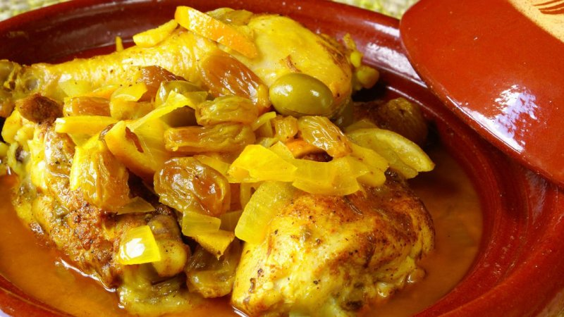

Chicken with Olieves Tagine

Info
This is a great Moroccan dish using few ingredients only: chicken, onion, olieves and preserved lemons.
Can serve 6 people, takes 30 minutes to prepare and between 1 and 2 hours cooking time
ingredients
- 1/2 tsp saffron threads, crushed
- 250ml/9fl oz chicken stock, warmed
- 3 tbsp olive oil
- 3 onions, chopped
- 1 tsp ground ginger
- 1 tsp ground cumin
- 3 garlic cloves, finely sliced
- 1 free-range chicken, jointed
- 1 tsp black peppercorns, crushed
- 6 small preserved lemons, quartered, or 2 larger ones, chopped (these are available from many supermarkets or specialist delis)
- 100g/3.5oz mixed olives (green is traditional)
- good handful coriander leaves, chopped
- good handful flatleaf parsley, chopped
Steps
- Add the saffron threads to the stock to infuse.
- Meanwhile, in a tagine or heavy-bottomed lidded casserole, heat the olive oil and fry the onions until soft. Add the ginger, cumin and garlic and cook gently for a couple of minutes.
- Add the chicken and stir to coat with the onion and spices. Sprinkle in the crushed peppercorns and add the lemons and saffron-infused stock.
- Bring to a simmer, then cover and cook on a very gentle heat for about one hour, or until the chicken is falling apart.
- Add the olives and continue to simmer for another ten minutes. Add the chopped coriander and parsley just before serving.
- Serve with potatoes, crusty bread or rice and a green salad.